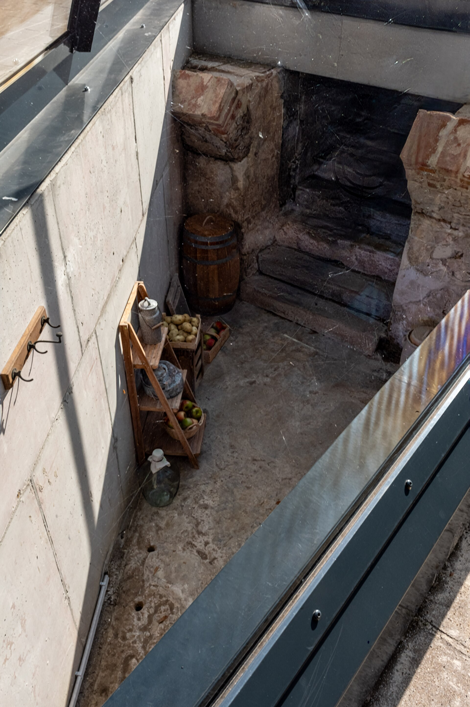

Crawl Space Repair in New Orleans, LA
Crawl space repair is the work of restoring the support system under a house: the piers or posts, the main beams they carry, the joists across them and the sill plates on top of the foundation wall. You need it when floors have started to sag, bounce or slope, when doors drift out of square with the seasons, or when moisture from below has quietly rotted the framing that holds the house up. It is structural work done in the dark, in a space often less than three feet high, which is why it is so often sold badly and inspected rarely.
In New Orleans, the details are local: homes here sit on Schriever soil over deltaic soils and ongoing subsidence, and 73.8% of the housing stock predates 1980. This page combines the full crawl space repair guide with New Orleans's measured soil, rainfall and housing data, so you can judge any quote against both.
Request a free inspection
New Orleans by the numbers: soil, rainfall and housing age
Generic foundation advice ignores the three things that decide how foundations actually behave here: the soil series under the house, the local rain and frost pattern, and how old the housing stock is. These are New Orleans's measured numbers, from public data — not estimates:
| Dominant soil series | Schriever (Schriever clay, 0 to 1 percent slopes, rarely flooded) |
| Clay in the topsoil | 81.9% |
| Shrink–swell (LEP) | 19.2% — high |
| Seasonal water table | At or near the surface |
| Average rainfall | 68.7 inches a year |
| Days below freezing | about 2 a year |
| Homes built before 1980 | 73.8% of housing |
| Homes built before 1960 | 50.4% of housing |
| Population | 383,997 |
| Elevation | about 1 feet |
The ground under most New Orleans homes is Schriever soil. Its topsoil runs 81.9% clay, and its most active layer has a linear extensibility of 19.2% — a high shrink–swell rating on the USDA scale. That is the engine behind most foundation movement here: the soil swells when it soaks up rain and shrinks as it dries, and the foundation rides those cycles. The seasonal high water table sits at or near the surface, so basements and crawl spaces also fight groundwater, not just surface rain.
Housing age stacks the risk. 73.8% of New Orleans's homes were built before 1980 and 50.4% before 1960 — footings poured to older standards, with decades of soil cycles behind them. The city averages 68.7 inches of rain a year, peaking in Aug, and about 2 days below freezing — the wet–dry and freeze–thaw swings that test those older footings hardest.
Data: USDA Soil Survey (SSURGO) via Soil Data Access, sampled at a residential point in New Orleans; Open-Meteo archive (ERA5) 2015–2024; US Census Bureau ACS 2023 5-year via Census Reporter; USGS Earthquake Catalog; population via Wikidata. Retrieved November 2026.
Watch: New Orleans's rainfall, soil and housing-age data in 11 seconds — animated from the same sources listed above.
What actually fails in a crawl space
Under New Orleans, the sampled soil is Schriever — 81.9% topsoil clay with a high shrink–swell rating (LEP 19.2%). The support stack under a pier-and-beam or crawl-space house is simple. Masonry or concrete piers, or timber posts, stand on footings in the soil. Main beams or girders span between them. Floor joists run across the beams, the subfloor sits on the joists, and the whole assembly meets the foundation wall at the sill plate. Every layer can fail in its own way. Piers settle or lean as soil consolidates or washes. Timber posts and beams rot from the bottom up where they meet damp soil. Joists rot at their ends, get eaten by termites, or were simply undersized and over-spanned when the house was built, so they flex under loads they were never going to carry stiffly.
The symptoms arrive upstairs, and they have a recognisable pattern. Contractors who work under houses hear the same list repeatedly: a musty odour after a rainy week, a soft spot along a hallway, doors that go out of square every spring and come back by autumn, floors that bounce when someone heavy crosses the room, and energy bills higher than the neighbour's for a similar house. None of those proves structural failure on its own. Together, especially the seasonal door movement and the localised soft spot, they say the system below the floor is wet, moving, or both, and they are the standard triggers for getting someone under the house with a light and a moisture meter.
One more failure hides at the edges. The sill plate, the timber that sits on top of the foundation wall and carries the joist ends and the wall framing above, rots quietly wherever gutters overflow or soil is banked too high against the house. Sill damage shows up as a floor that tilts toward one exterior wall while the middle of the house stays level, and it is missed by anyone who only looks at the centre supports. A thorough inspection walks the perimeter as carefully as the middle, checks the joist ends where they pocket into the beam or rest on the sill, and probes the wood at every plumbing penetration, because kitchens and bathrooms leak downward for years before anyone sees a stain.
How do I know if it's termite damage or wood rot?
Probe the wood with a screwdriver or awl. Rot is soft, dark and crumbly, and the tool sinks in with a damp, spongy feel, usually worst near the ground or a water source. Termite damage keeps a harder shell: the surface often looks intact while the inside is hollowed into galleries that follow the grain, sometimes with mud tubes on the wood or piers. An inspector can confirm in minutes.
The fixes compared: support jacks, joist work, beams and encapsulation
73.8% of New Orleans homes were built before 1980, so most crawl space repair work here happens on older footings. Adjustable steel support jacks, sold under brand names such as SmartJack, are the standard answer to supports that have settled or spans that flex. A jack stands on an engineered footing base, usually a precast or poured pad that spreads the load, and is threaded up until it carries the beam at the right height. Because the footing is the point, a jack set straight onto soil with a block under it is not the same product, whatever the invoice calls it. Joist problems are handled differently: a damaged joist can be sistered, meaning a new joist fixed tight alongside it to share or take over the load, while a failed main beam is replaced in sections or reinforced, working under temporary supports.
Encapsulation is the moisture half of the trade: a heavy liner sealed across the ground and up the walls, vents closed, and usually a dehumidifier and drainage added. Done after the structure is sound, it protects the new work and dries the space out for good. Done instead of the structural work, it is the most expensive mistake in this category, because the liner conceals the underside of the floor system while the movement continues above it. The sequencing rule has no exceptions: stabilise the structure first, then seal and dry the space. Any quote that reverses that order should be read as a sales preference, not a repair plan.
| Fix | What it does | When it is the right call | What it does not do |
|---|---|---|---|
| Adjustable steel support jacks | Adds engineered support points under beams, set on footing bases | Settled piers, sagging beam lines, bouncy over-spanned floors | Nothing for moisture, rot already in the wood, or termites |
| Joist sistering / replacement | Restores the floor framing itself, joist by joist | Localised rot, termite damage, cracked or undersized joists | Nothing for a settled main beam or a wet crawl space |
| Beam repair or replacement | Rebuilds the main load path the joists rest on | Rotted, cracked or undersized girders; whole-room slopes | Slowest, most disruptive option; pointless if supports below it keep sinking |
| Encapsulation + vapor barrier | Seals ground moisture out; with drainage and dehumidifier, dries the space | After structure is sound, in humid climates and wet sites | Adds zero support; never a fix for sagging by itself |
Can sagging floors be fixed without replacing the joists?
Often, yes. Where joists are sound but the beam line has settled or a span flexes, adjustable steel jacks on proper footings can carry the load and recover the level without touching the joists. Where individual joists are rotted or termite-eaten at the ends, sistering new timber alongside them is the usual fix. Joist replacement is reserved for widespread rot; it is the slow, expensive end of this work.
How a crawl space repair job runs
New Orleans averages 68.7 inches of rain a year — moisture management is part of any lasting fix. Access decides how the work feels from upstairs. A crawl space with three feet of clearance and a good hatch is a workplace; one with eighteen inches of clearance and a tight entry is an excavation project in miniature. In the tightest spaces, crews sometimes have to cut an access opening through a closet or utility-room floor to get jacks and beam sections in, then patch it afterwards. That is a legitimate technique, and it should be discussed and priced at the quotation stage. Discovering mid-job that the quoted method cannot physically reach the beam is how schedules and tempers come apart.
The lift itself follows the same discipline as pier work: small increments, constant level checks, and a stop point set by the structure rather than the tape measure. Floors that have sagged over years have taken finishes, partitions and plumbing with them. Bringing the support back to level in an afternoon can crack tile, open drywall joints and stress pipes, so good crews raise what can be raised safely and support the rest exactly where it sits. A floor that ends up firm, supported and a quarter-inch off perfect is a better outcome than a level floor over split joists.
- Inspection: floor levels, moisture readings and a joist-by-joist condition check under the house
- Plan: support locations, jack count, any joist or beam work, and the moisture scope, itemised
- Temporary support: the affected beam line is shored so structural pieces can be swapped safely
- Footings and jacks: bases set, jacks installed and brought up in small increments to level
- Framing work: sistered joists, beam sections and sill repairs completed and checked
- Moisture work, if scoped: drainage, liner sealed at seams and walls, vents closed, dehumidifier fitted
- Final check: floor levels re-measured, doors and finishes checked upstairs, photos documented
Do I need a dehumidifier in my crawl space?
In humid climates and in any encapsulated crawl space, usually yes. Sealing the vents keeps summer air out, but the ground still releases moisture, and without a dehumidifier it can sit damp enough for mould on the new liner and framing. In dry climates, or vented spaces with excellent drainage and a ground barrier, a standalone unit may be unnecessary. Moisture readings after the work settle the question honestly.
What crawl space repair costs
Under New Orleans, the sampled soil is Schriever — 81.9% topsoil clay with a high shrink–swell rating (LEP 19.2%). Published pricing guides put typical crawl space repair projects between $3,000 and $10,000 in total. The bottom of that band is a focused structural job: a run of support jacks under one beam line, or sistering a handful of joists. The top is a combination job with beam work, many support points and framing repairs across much of the footprint. Full encapsulation is priced separately in the same guides at roughly $5,000 to $15,000 depending on footprint, liner specification, drainage and whether a dehumidifier is included, which is why a quote that bundles structure and encapsulation into one number deserves to be unbundled before you compare it with anything.
The variables that move a quote are the same ones that move the work: clearance and access, the number of support points, how much framing is actually damaged once someone looks properly, and whether water is entering the space in a way that needs drainage rather than just a liner. Beware the quote written after a five-minute look through the hatch. Crawl space scope is genuinely hard to price without crawling the whole footprint, and the honest contractors are the ones who say the framing count is provisional until the inspection pass is done. A fixed, itemised quote after a full inspection is the document to hold out for.
How much does crawl space repair cost?
Published guides put most crawl space repair projects between $3,000 and $10,000, with focused jack or joist jobs at the bottom and combined beam, support and framing work at the top. Full encapsulation adds roughly $5,000 to $15,000 on top when it is scoped. Your real figure depends on access, support count and how much framing is damaged, which is why a full under-house inspection precedes any quote worth trusting.
How long does crawl space encapsulation last?
Published guides put a full encapsulation system's working life at roughly 10 to 20 years, with the liner often lasting toward the top of that range. The dehumidifier is the shorter-lived component and the one most likely to need servicing or replacement inside that window. Lifespan assumes the seams were sealed properly at installation and the liner is not later cut or torn by other trades working in the space.
When the order is wrong, and what not to DIY
73.8% of New Orleans homes were built before 1980, so most crawl space repair work here happens on older footings. The cautionary pattern in this trade is consistent enough to state plainly: a homeowner pays for a full encapsulation, sold as the complete answer, in a crawl space where the structure was never stabilised. The job then runs long, access problems surface that were never priced, seams are left imperfectly sealed because the schedule has slipped, and the floor above keeps moving the whole time. None of that requires a dishonest contractor; it only requires the work to be sequenced wrong and quoted vaguely. The defences are boring and effective: structural scope first, moisture scope second, both itemised, the schedule in writing, and a final walkthrough, or at least dated photographs, of the seams and supports before the last payment.
The DIY version of the same mistake is the hardware-store screw jack. Adjustable posts have legitimate uses as temporary shores, but set directly on soil or on a loose block, they concentrate the house's load on a point that will punch down into the ground it was meant to bypass, and they carry no footing, no corrosion protection plan and no engineering behind the placement. Raising a beam on undersized posts, without temporary support sequencing, can split the very joists you are trying to save. Under-house structural work is also, simply, miserable: low, dark, wet and full of other people's previous repairs. Measuring and monitoring from upstairs, photographing symptoms, checking doors seasonally, is excellent homeowner work. The jacks belong to a crew with footings. Keeping a simple dated log of door fit, new cracks and floor feel through the seasons turns impressions into evidence an inspector can actually use, and it costs nothing but a notebook kept by the back door.
Can I install crawl space support jacks myself?
You should not, in nearly every case that matters. Adjustable posts sold for DIY use are shores, not foundation supports: without an engineered footing base they sink, and without a level survey you lift by feel against a structure that cracks when one point rises faster than its neighbours. The failure mode is slow and hidden, which is worse. Pay for the inspection and footing design; that part is structural.
Can I just encapsulate and skip the structural work if money is tight?
No, and it is the most common sequencing error in crawl space work. Encapsulation controls moisture; it adds no support, and it covers framing that is still moving. Stabilise the supports, beams and joists, confirm the floor sits at its repaired level, and then seal the space to protect the fix. A contractor who insists the liner will sort the sag is selling the liner, not the repair.
What foundation repair costs in New Orleans
New Orleans repairs fall into fairly predictable ranges. The figures below are published market ranges — not quotes, and not prices from any specific company. Your cost depends on how much of the foundation has moved and the piers it needs.
| Repair | Typical range | Notes |
|---|---|---|
| Steel or helical piers (per pier, installed) | $1,000 – $2,500 | Published national guides put piers at $1,000–$3,000 each; most homes need 6–14, driven or screwed to stable strata below the problem soil. |
| Average structural repair (whole job) | $4,000 – $12,000 | The typical total for a residential piering job, depending on pier count, access, and how much lift is attempted. |
| Slabjacking / mudjacking (per section) | $500 – $1,500 | Raises a settled slab section by pumping material beneath it. Best for porches, walks, and mild settlement. |
| Polyurethane foam lifting (per section) | $1,000 – $2,500 | Foam injected under a slab expands and lifts it. Faster and cleaner than mudjacking, at a higher price. |
| Interior drainage system + sump pump | $2,000 – $6,000 | Controls groundwater under the floor; often paired with structural work where the water table is high. |
| Foundation crack injection (per crack) | $500 – $2,500 | Epoxy or polyurethane injection seals a leaking or cracked wall section. DIY kits run $75–$225 but cannot restore strength. |
| Exterior grading & drainage correction | $500 – $2,500 | Regrading soil and extending downspouts so water stops collecting at the footing. |
Raised pier-and-beam homes are often less expensive to re-level than slab homes, but widespread subsidence can mean more piers on slab foundations here.
Be wary of phone prices given without measurements — a proper quote follows an inspection and is itemised, so you can compare offers line by line. Our national cost guide shows how to check any quote against these ranges.
Crawl Space Repair in New Orleans: local questions
What soil conditions affect crawl space repair in New Orleans?
New Orleans homes sit mostly on Schriever soil, with 81.9% clay in the topsoil and a shrink–swell rating of 19.2% (high). Crews plan depth and spacing around that soil behaviour, because a fix that ignores how the local ground moves with moisture will not hold. Ask any contractor bidding on your home to explain, in writing, how their plan accounts for this soil — a good one answers without hesitating.
Are older New Orleans homes more likely to need crawl space repair?
Yes — 73.8% of New Orleans's housing was built before 1980 and 50.4% before 1960. Those homes have older footing designs and fifty-plus years of soil movement behind them, so they make up most serious repair work. Age alone is not a diagnosis, though: what matters is measured movement, so an older home with stable readings may need nothing at all.
How does New Orleans's rainfall affect crawl space repair?
New Orleans averages 68.7 inches of rain a year, peaking in Aug. Wet months swell the soil and load walls with water pressure; dry months shrink it away from footings. That cycle is why timing and drainage are part of any durable repair plan here — fixing the structure without managing the water that moves the soil usually means the problem comes back.
Frequently asked questions
How long does crawl space repair take?
Small structural jobs, a run of support jacks under one beam, often finish in one to two days. Full encapsulation with drainage and a dehumidifier takes several days of work under the house. Get the schedule in writing on multi-day quotes, with what counts as done each stage. A job sold as three days that drifts past a week with changing crews is a contract problem, not a weather problem.
Will a vapor barrier alone fix my sagging floor?
No. A vapor barrier controls ground moisture, and that is worth doing, but it adds no support at all. A floor sagging because a beam has rotted, a pier has sunk or joists are undersized will sag at exactly the same angle over a dry liner. Support first, moisture second; any quote that sells the liner as the cure for a slope is skipping the structural half of the job.
What should a crawl space encapsulation quote include?
An itemised encapsulation quote should list liner thickness and where it runs, whether seams are sealed and walls are covered, how existing water is drained, whether a dehumidifier is included, and the work schedule. Photographs of the finished seams and corners are a reasonable thing to request before final payment. Vague one-line quotes hide exactly the corners, taping, drainage, that decide whether the system works.
Does encapsulation stop termites?
No, encapsulation does not stop termites, and in some cases it makes inspection harder because the liner covers the soil and lower walls where activity shows first. Termite treatment is a separate trade with its own contracts and inspections. If a home has a termite history, ask how the proposed liner system preserves an inspection gap at the walls, and keep your termite inspections on schedule after the work.
Can I stay in the house during crawl space repair?
Yes, homeowners normally stay in the house throughout crawl space repair. The crew works below the floor, and the main effects upstairs are some noise during jacking and brief periods where a floor area should not carry heavy loads while supports are swapped. Low-clearance spaces sometimes need an access cut through a closet or utility floor, which your contractor should flag and price before starting, not discover mid-job.
How do I know if the sag is in the joists or the main beam?
The pattern gives it away. A dip or soft spot in one room, especially along a hallway or under a heavy appliance, points at local joist damage or a single failed support. A whole side of the house sloping in one direction points at the main beam or the piers carrying it. A technician under the house with a level and a moisture meter confirms which in one visit.
Related guides
Request a free foundation inspection
Tell us where you are and what you are seeing — a local specialist will call you back to schedule it.
Prefer to talk first? [Call-tracking phone number to be added before launch]